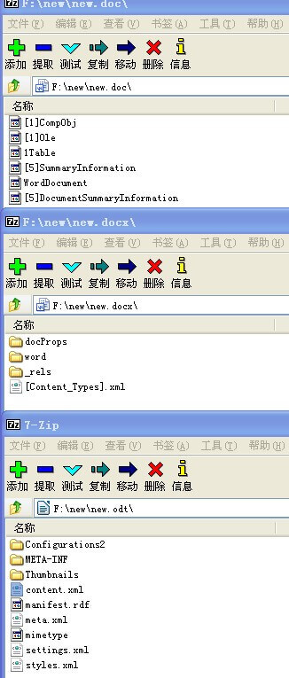
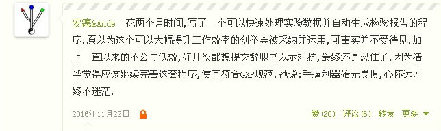

在完成了数据处理 之后，我有了更进一步的想法，自动生成检验报告。因检验员要花很多时间写报告，而既然有了处理数据，为什么不把报告也一起处理了呢？
最开始，我想到用python操作doc。python-docx 只展示了基本的读写操作，要实现我想要的东西基本上全新从零构造，和生成网页差不多，样式跟内容混搭，还是算了吧。
然后我就转到了生成网页。虽然多了css控制布局，但设计仍是个脏活，即使所见及所得也可能得不到跟原来一样的界面。如果将原来的报告模板作为背景图片，又涉及数据的定位问题，也是麻烦。
后来我想的是水晶报表这类成熟商业软件，但这种方案也要求重新设计模板，而且我不懂C#。
就在我纠结的时候，看到有人说doc其实是个压缩文件。我当即来了兴趣，如果可以弄懂其构造或许就能按我的意愿操纵了。以下是doc/docx/odt用7zip打开的样子。

微软家封闭的doc一看就没有继续研究的兴趣，而开放的docx则像个打包的网页，文本是存在于/word/document.xml。只要将doc转为docx，解压出/word/document.xml进行操作，然后再打包回去就可以了。理论上应该是这样的，但是当我将docx解压再打包回去的时候并不能得到原来的文件，难道我还得去弄懂docx的打包算法吗？有没有直接操作压缩文件，又不会破环其编码的方法。我接触到了zipfile，很幸运就是我想要的。
就这样绕了一圈，我又回到了开始。只不过不是用docx模块而是用zipfile模块迂回解决了问题。先将数据用键值对打包成字典，然后将docx文档需要填入数据的地方用键预先占位，再用zipfile打开docx中的/word/document.xml，然后遍历将键替换成值，最后保存输出就可以了，问题得解。
后来我想起了大学自学java的时候老师讲过的一种MVC编程模式，仔细想来我的方案就是走的这个路子，用办公表格的二维表做数据模型M，用办公文档做视图V，用python做控制C。这种做法真的是非常省心省力省时。
我试图将检验员从无聊报告书写的工作解放出来，并给出了解决方案，让公司可以无痛无缝地过渡到自动化时代，但我未能说服领导采用我的方案。这是我的悲哀也是公司的悲哀，企业追逐利润当降低成本提高效率。因理念不合我最终决定离开，在离开之前我有幸看到了Waters的工程师做新仪器的确认，一套流程下来如行云流水一般，让我意识到自己还是只小菜鸟。这让我谦逊，但并不是重点。重点是我看见人家用仪器自带的功能出报告，应了同事那句“哔了狗”，原来我们确实是在做低效率的无聊工作。

上了岸的鱼便不再是鱼，我不想探讨药检的是与非，我想说的是这段“黑客”经历为我打开了一个新世界，也是《黑客与药师》系列的缘起。当然黑客不仅仅是编程，始终尝试更优的方案，优雅的解决问题才是初心与使命。
1 | ###### |